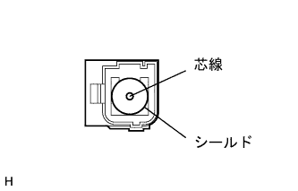

Navigation Antenna Assembly Inspection |
| 1. Navigation Antenna Assembly Inspection |
 |
Resistance Inspection (ETC Antenna)
Disconnect the connector shown in the illustration that is connected to the navigation receiver assembly.
Using SST (Toyota electrical tester), measure the resistance between the core wire and shield terminals of the connector.
| Tester Connection | Condition | Standard |
|---|---|---|
| Core wire - Shield wire | Always | 10 Ω or less |
Navigation Antenna Assembly Installation Condition Inspection
Inspect the navigation antenna assembly cord for installation problems such as sharp bends or pinching.